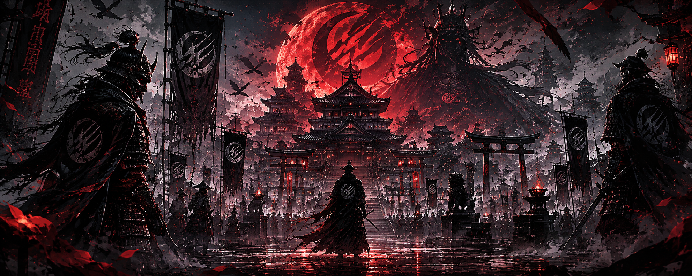
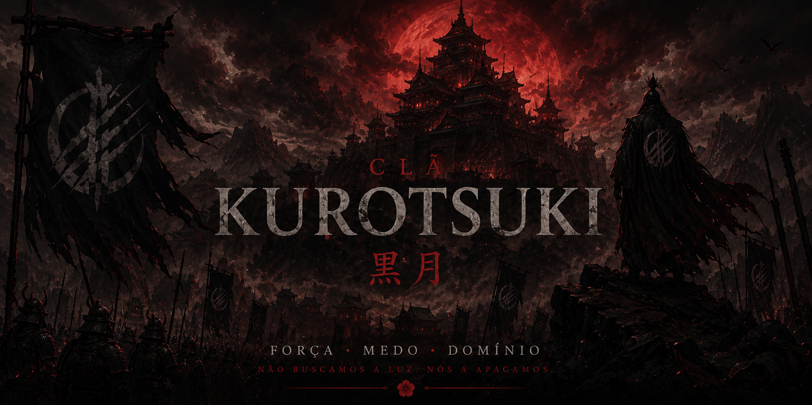
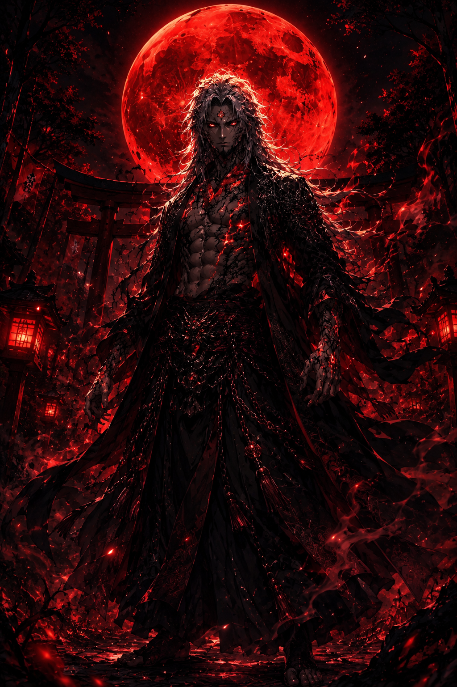
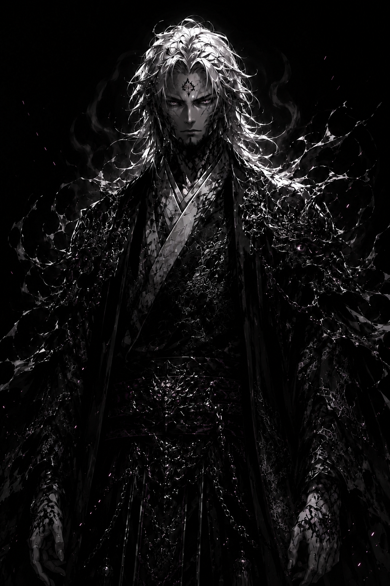

Alguns clãs conquistam terras. Os Kurotsuki conquistaram o medo.
Séculos atrás, o primeiro imperador Kurotsuki entrou sozinho na floresta proibida de Hikogu no Mori carregando seu filho moribundo nos braços.
Quando retornou, o herdeiro estava curado. Mas algo havia mudado. Algo escuro. Algo que jamais deixou a linhagem imperial.
Desde então, o Clã Kurotsuki cresceu cercado por histórias de guerreiros monstruosos, soldados impossíveis de matar e imperadores que caminham entre homens e demônios.

— Imperador Tetsu-zan

Enquanto outros líderes dependiam de alianças, os Kurotsuki governavam através do terror absoluto.
Vilarejos inteiros se rendiam apenas ao ver os estandartes negros surgindo entre a névoa.
Seus guerreiros eram conhecidos pela brutalidade, resistência sobrenatural e lealdade fanática ao imperador.
Ninguém sabia ao certo onde terminava a lenda... e onde começava o horror real.

O soberano dos Kurotsuki. Um homem envolto em lendas, medo e uma herança amaldiçoada.

Guerreiros de elite responsáveis por proteger o imperador e eliminar qualquer ameaça ao império.

O lugar onde o pacto foi selado. Nenhum homem entra naquela floresta sem deixar parte da própria alma.
Enquanto existir sombra nas montanhas, o nome Kurotsuki continuará vivo.
VOLTAR AOS CLÃS